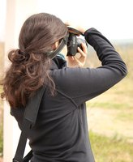

Sobre mi:
“¿Qué diría el ingeniero, una vez hubieras explicado tu problema y enumerado todas las insatisfacciones de tu vida? Probablemente te diría que la vida es una cosa muy difícil y complicada; que ninguna interfaz puede cambiar eso; que cualquiera que crea lo contrario es un imbécil; y que si no te gusta que escojan por ti, deberías empezar a elegir por ti mismo.”
(En el principio… fue la línea de comandos – Neal Stephenson)
Poco tengo que decir para todos vosotros que me conocéis, para los que no.Decir que me gusta la informatica en general, y el Software Libre en particular.
Software Libre
Mi pequeño granito de arena al Software Libre (...por ahora y eso espero solventarlo pronto) es la organización del Concurso Universitario de Software Libre, vamos ya por seis ediciones; la Guadec-es 8, Gnome 3 Party de Sevilla, y colaboración en la Asociación Sugus GNU/Linux de la Universidad de Sevilla y con el grupo OpenData Sevilla,
Fotografia
«Una buena fotografía evita que un momento huya para siempre» Eso dicen, y eso intento retratar y difundir.
El valor no está en la perfección, sino en el mensaje. No quiero cosas perfectas que no transmitan nada. La fotografía, es una forma más de compantir, en este caso, momentos vividos o hechos ocurridos.